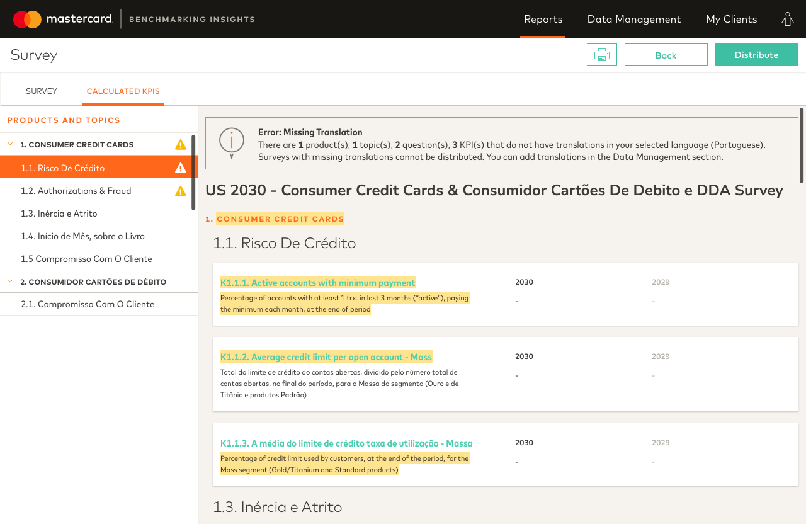
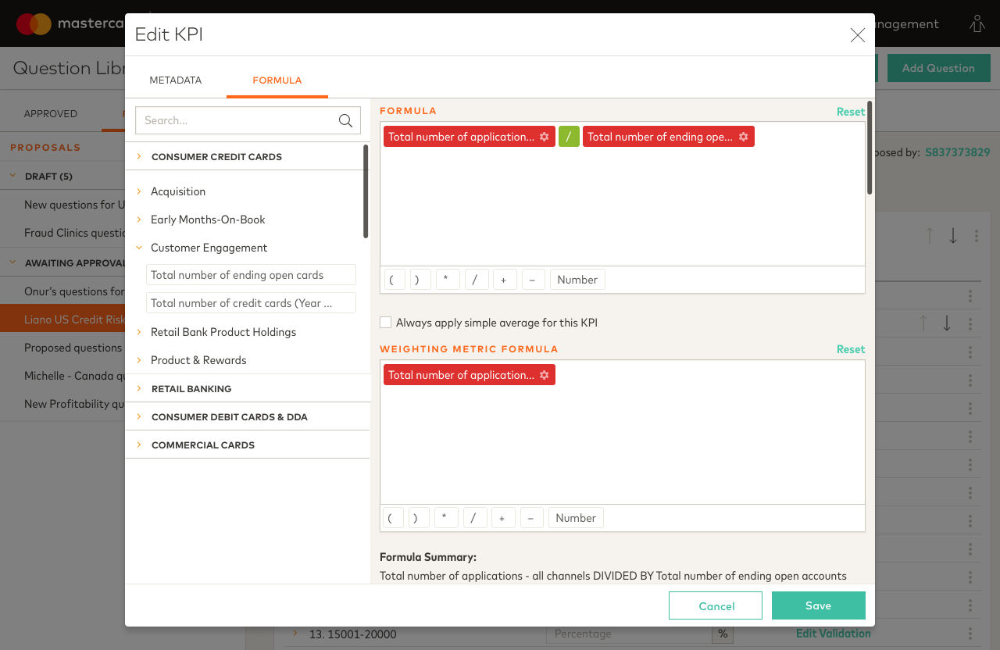
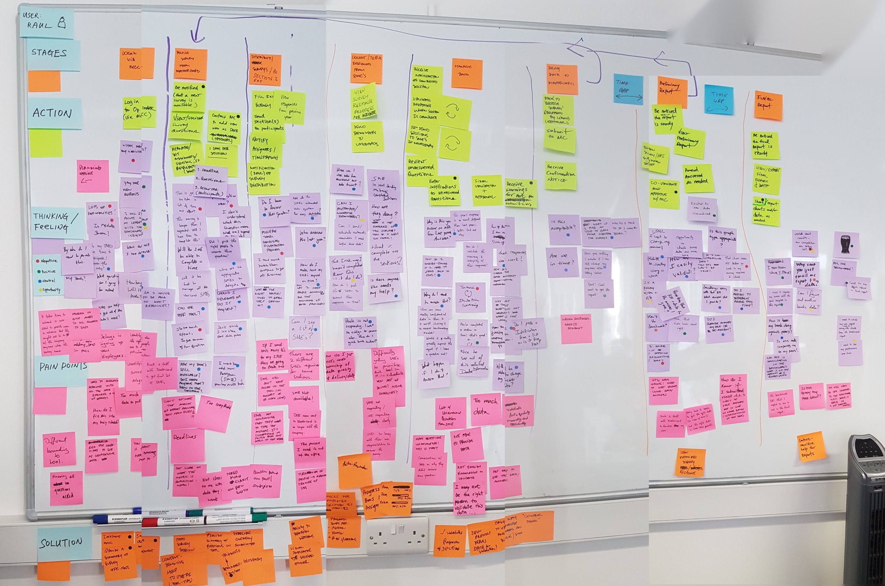
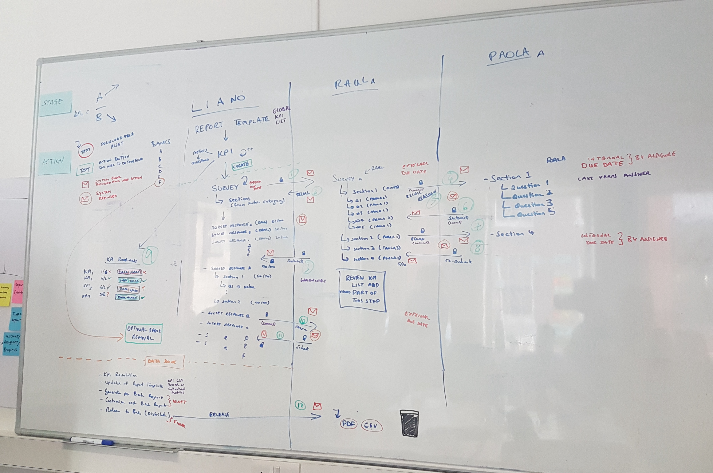
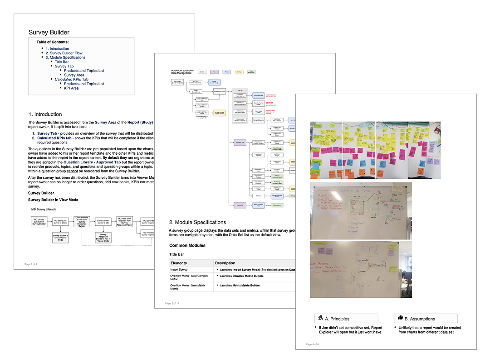
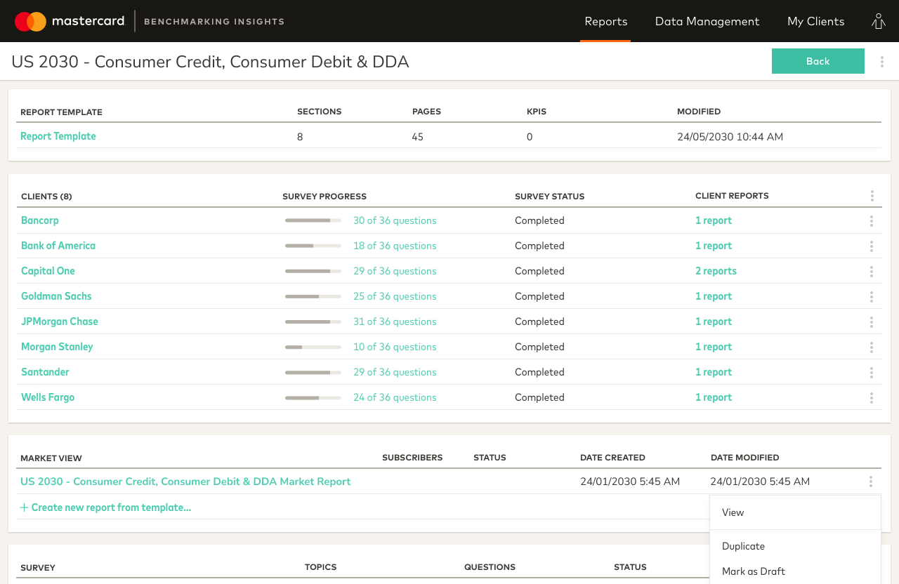
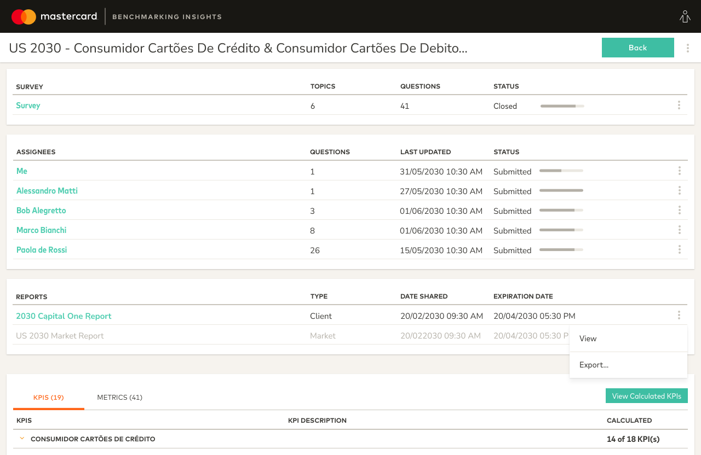

Replacing an email-and-spreadsheet benchmarking process with a secure, end-to-end platform that gave Mastercard full control over their data from survey creation to report delivery.

Replacing an email-and-spreadsheet benchmarking process with a secure, end-to-end platform that gave Mastercard full control over their data from survey creation to report delivery.
Background
Mastercard conducted annual benchmarking surveys with merchant banks across multiple markets, aggregating the responses to produce anonymized reports showing each bank how they performed against industry peers.
The process was managed entirely through email and Excel: surveys were distributed manually, responses were collected without any formal chain of custody, and reports were built by hand and delivered as printed documents or PDFs.
Pain Points
Surveys went out as Excel files with no way to verify who filled in each section, whether the right subject matter expert was involved, or how many times the file had been edited. Without controls on the data as it moved between teams, errors could creep in at any stage.
Mastercard's benchmarking contracts included a tiered fallback system: if a group of merchants didn't collectively meet a threshold, a secondary rule had to be applied instead. Analysts checked this manually for every report, every time.
Chasing responses across merchants required five or more account managers working in parallel. Once the data was finally in, a separate analyst team took over to build each report from scratch. End-to-end, the whole cycle took several months.
Finished reports were emailed as PDFs or printed and posted. There was no central place to find them, and no reliable way to know which version was the most current.



Mastercard Benchmarking Insights, a self-service survey platform that replaced an annual email-and-spreadsheet process end to end.
Discovery
We conducted stakeholder interviews and ran journey mapping workshops to trace the full benchmarking process from the first survey going out to the final report landing with a client. The survey response stage was where the most significant problems were concentrated: Mastercard had no visibility into who had responded, how far along each merchant was, or whether the right people were filling in the right sections.
We also spent time understanding how the benchmarking rules worked in practice, the tiered logic, the fallback conditions, and where human error was most likely to occur, so we could design a platform that handled it automatically.

Mapping the journey of a Mastercard analyst, from building the survey, response collection, to distributing the final report to clients.

Together with the engineering and data team, we mapped the survey response lifecycle, identifying at which stage the form should be read-only and for which user type.
Specifications
I owned the functional specifications for the survey management and data management modules. As with Panels, I worked from a Definition Launchpad capturing personas, module journeys, and requirements, before moving into detailed specifications covering every interaction state, validation rule, and edge case. Specifications were hosted on Confluence and served as the shared reference point across design, engineering, and QA.

Specifications documenting the full survey lifecycle, from builder logic and question types through to response tracking and report delivery.
Design
Because MBI shared a component library with Panels, which we had already built, I could move straight into medium-to-high fidelity wireframes. The foundational visual decisions were already made, which meant the design work could focus on the interaction problems specific to MBI.
Before getting into wireframes, I looked at widely used survey tools like Google Forms and Typeform to understand the patterns users already knew. Given the sensitivity of the data involved, designing for familiarity was a deliberate choice: if the interface felt recognizable, users would be more confident filling it in.
I was responsible for designing the full survey lifecycle on both sides of the platform. I also designed the data management module, which covered how data was handled, stored, and tracked throughout the benchmarking cycle.
An interactive prototype was built and used by Mastercard for internal testing with users in the USA, Turkey, and India.
A dynamic survey builder with full conditional logic, so account managers could create and configure surveys directly on the platform.
A completion tracking dashboard giving real-time visibility into how many merchants had responded and where gaps remained.

Mastercard analysts can track the progress per client but cannot modify the survey responses themselves.
The ability for client administrators to assign individual survey sections to the right subject matter experts within their organization.
Indicators showing who had submitted each response, alongside the previous year's answers for reference.

The client administrator can assign sections and individual questions to subject matter experts and track their progress.
Outcome
Mastercard Benchmarking Insights replaced a multi-month, multi-team manual process with a fully digital platform that enforced data integrity, automated legal compliance, and significantly reduced operational overhead.
Every survey response was tied to an authenticated representative at the merchant bank, with a clear record of who provided each answer and when.
By removing the need to manually copy and paste data from market research sources into PowerPoint, the platform eliminated a significant source of errors that had undermined report accuracy.
Account managers could monitor survey progress across all participating merchants from a single dashboard, replacing weeks of back-and-forth email coordination.
Reports were generated from templates and delivered digitally through the platform, replacing manual compilation and the distribution of printed or emailed PDFs.
A process that had previously required five or more account managers coordinating over several months was consolidated into a centrally managed, auditable workflow.
I worked with Tiffany on a wide range of projects and, as is often the case with startups, one is required to wear many hats. Whether meshing technology with practicality, delivering a concept from a sketch to a finished product, or sharing her knowledge in show-and-tells, Tiffany constantly delivers. She is a fantastic communicator and I personally felt empowered working alongside her.
Andrew Rock, Former Frontend Developer, RecommenderX